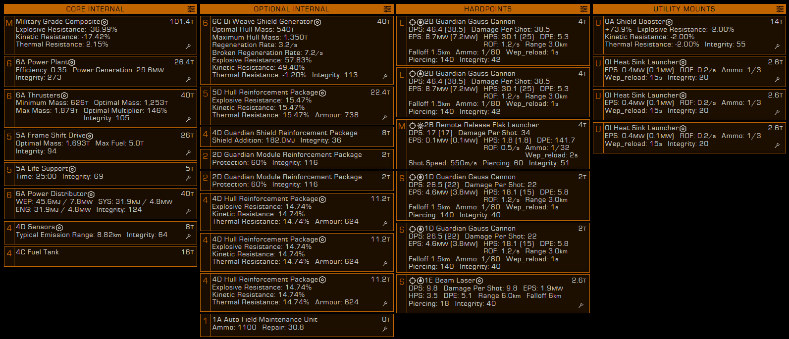

Slightly faster than Krait MK II, and extremely maneuverable. Powerful thrusters allow for orbiting without boost. Can use additional C5 GSRP instead of HRP by powering down the AFMU and using a regular MRP instead of GMRP. Has plenty of speed, but can trade a bit of armor to use Lightweight Composite hull if needed.
Build Link: https://s.orbis.zone/3wb9

Note that power priorities should be set accordingly to your specific chosen module
Alliance Chieftain Wireframe with permission from Anthony Hunt - (elite-dangerous-blog) - Archive Link, as site no longer exists.